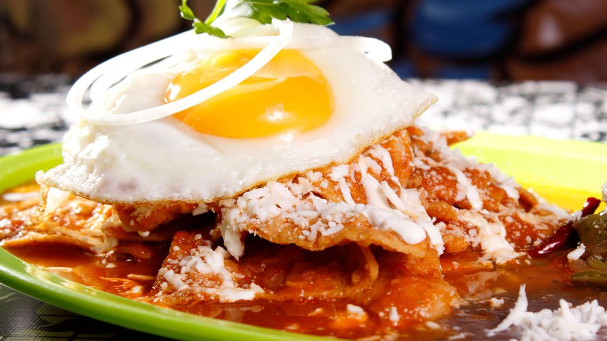

Red Chilaquiles

Chilaquiles Rojos topped with a fried egg
A Mexican Classic
Let me introduce you to a Mexican classic, our dilicious chilaquiles. It's a very simple dish made of totopos covered in a classic red salsa. The heat from the salsa combined with an egg, is one of the best things I have ever
had for breakfast. Here you will find two of the three key ingredients in Mexcan cusine, corn and chile. They graciously come together, paired with some of our favorite aromatics. The ingredients all do such a great job at enhancing
all those delicious flavors Mexican cusine is known for.
They say that flavor can really take you back in time. There's always a dish that can awaken memories of those who we love. This meal does that for me. I remember as a child, I would visit my grandmother often. Every single time I would arrive at her
house, she would ask me what I wanted her to make for us to eat. It never failed, the same question time and time again with the same answer, chilaquiles.
You can pair chilaquiles with an egg on top. Crumble some cheese and finish garnis with some cilantro. You can also have them on their own with some sour cream and queso fresco. That is the beauty of Mexican cusine, you can add,
combine, take so many of the incredible ingredients that we have available. Chilaquiles can be made as spicy as you can take them or as mild as you prefer them. It takes a little practice but adjusting the level of spiciness in our cusine
is doable. Some will add an even hotter salsa on top of the already spicy meal. It just really all depends on what you like and prefer.
Ingredients
Red Sauce
- 3 Roma tomatos
- 1/3 white onion
- 1 bay leaf
- 2 chiles guajillos
- 1-3 chiles de arbol (the more you add the more spicy it will be. You can use more if you would like)
- 2 garlic cloves
- 1/2 Tablespoon knorr chicken bullion (you can substitute with you favorite chicken or vegetable bullion)
- 1/2 teaspoon of kosher salt
- 1 teaspoon of dried oregano
- 1/2 teaspoon of black pepper
- 2 cups of water
Totopos
- Corn tortillas (stale tortillas work best
- Vegetable or Canola oil. Enough to cover tortillas with a light layer if you are baking. Or about 2 cups if you are frying.
How To Make
Red Sauce
- In a small saucepan add the two cups of water, bay leaf, chiles, tomatoes, onion and garlic.
- Over medium to high heat bring water to boil, then lower flame to low and cook until tomatoes are soft (around 5 minutes).
- Let the water cool a bit. Remove bay leaf and carefully place all contents in a blender with about one cup of the broth and all spices on the list. Put remainder broth to the side in case the sauce is too thick. Blend until smooth
- Add about two tablespoons of oil in a pan over medium heat and carefully add the puree into the pan.
- Turn the flame down to low and let the sauce cook for about five minutes, stirring as needed.
- Once the sauce has thicken and darkened a bit turn off the heat and set to the side
Totopos
Baked Totopos
- Preheat over to 350 degrees
- Cut your tortillas in triangles
- Cover tortillas with a light and even layer of your preferred oil
- Salt to taste
- Bake for around 15 minutes or until edges start to brown
Fried Totopos
- Prep pan over medium heat
- While pan is heating, cut tortillas in triangle shapes
- Place two cups of oil in th epan once it is heated
- Carefully place tortillas in the pan (break into small batches so tortillas don't overlap). Fry until golden brown.
- Once you have fried all triangles season with salt to taste.
Make The Chilaquiles
In the same pan you cooked the already blended sauce pour in your
totopos. Carefully fold them in until all are coated with the red sauce. Serve with fried egg immidietly in order to prevent your
totopos from
gettin soggy.
** Pro tip, place totopos on a plate along with a fried egg, and pour the salsa at the end in order for them not to get soggy. Top with sour cream and cilantron for extra flavor.**